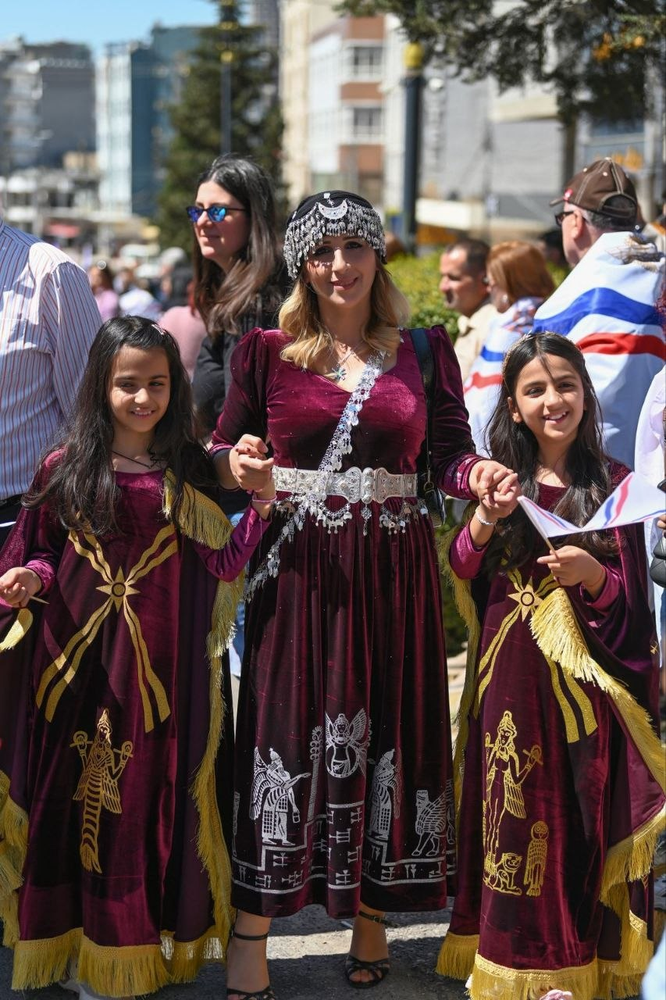
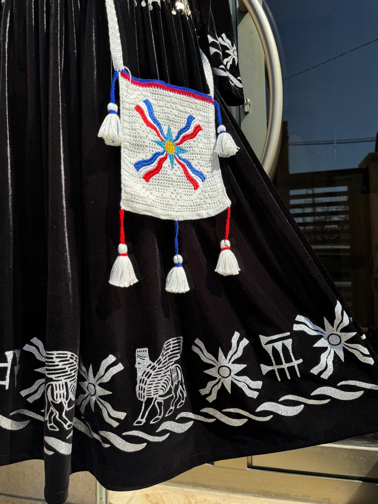

Custom Khomala Designs
Personalized Assyrian traditional attire designed around the customer's size, preferred colors, event, and style.
Custom Assyrian Traditional Attire
Founded by Aylin Ajmaya and Basim Yousef, Khomala creates vibrant, custom-made Assyrian attire that blends timeless tradition with modern elegance and meaningful cultural symbols.

Browse the Collection
Tap a category to see real examples of what we create.


Our Story
Khomala was founded by Aylin Ajmaya and her husband Basim Yousef in 2022, but Aylin's love for Assyrian traditional attire began long before the business itself. Since childhood, she had a passion for creating khomala-related pieces, inspired by the beauty of Assyrian heritage, traditional colors, cultural symbols, and the details that make every outfit unique.
With the support of Basim and her family, Aylin officially launched Khomala in 2022. Her goal was to modernize Assyrian traditional outfits without losing their original beauty, identity, and cultural meaning.
Mission
Khomala is more than custom-made clothing. It is a celebration of Assyrian identity, creativity, and pride. Through vibrant colors, meaningful symbols, and carefully designed details, Aylin creates pieces that honor the past while inspiring a new generation to feel connected to their roots.
Services
Each piece is prepared with attention to color, fit, details, and the feeling the customer wants to carry into their celebration.
Personalized Assyrian traditional attire designed around the customer's size, preferred colors, event, and style.
Elegant traditional looks for brides, sisters, mothers, families, and special wedding celebrations.
Vibrant outfits made for Assyrian New Year, dancing, festivals, community gatherings, and heritage events.
Coordinated traditional looks for children, couples, and families who want to celebrate together.
Belts, fabric details, embroidery, symbolic motifs, headpieces, and styling touches that complete the look.
Guidance on colors, traditional elements, modern touches, and how to make the design feel personal and meaningful.
Custom Orders

Community Shared Photos
A celebration of real Khomala moments shared by the community. These photos show how Assyrian traditional attire comes to life at weddings, Akito celebrations, cultural gatherings, and special occasions — worn with pride, joy, and connection to heritage.
Contact Khomala
Send a message with your idea, preferred colors, event date, city/country, and any inspiration photos you have. Khomala will guide you through the next steps.
Men's Collection
Embroidered shirts, vests, and full sets made for weddings, Akitu, and cultural celebrations — tailored with the same symbols and pride carried through every Khomala design.
Order a Men's PieceWomen's Collection
Velvet gowns, embroidered detailing, and statement headpieces designed to honor Assyrian tradition with a modern, wearable finish — for weddings, Akitu, and everyday pride.
Order a Women's PieceFamily Collection
Matching and coordinated looks for couples, parents, and children — so every generation can wear Assyrian tradition with pride at the same celebration.
Order a Family Set